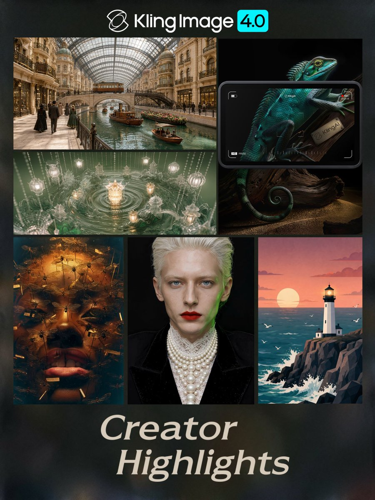
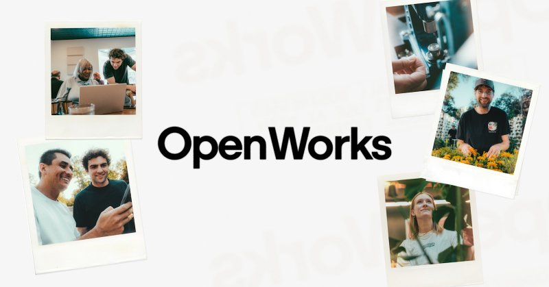
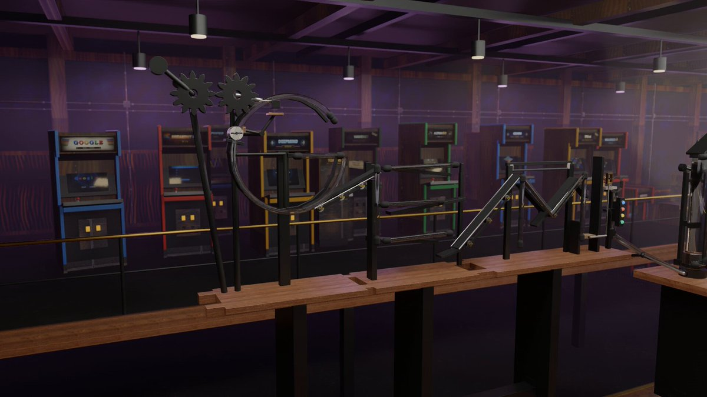
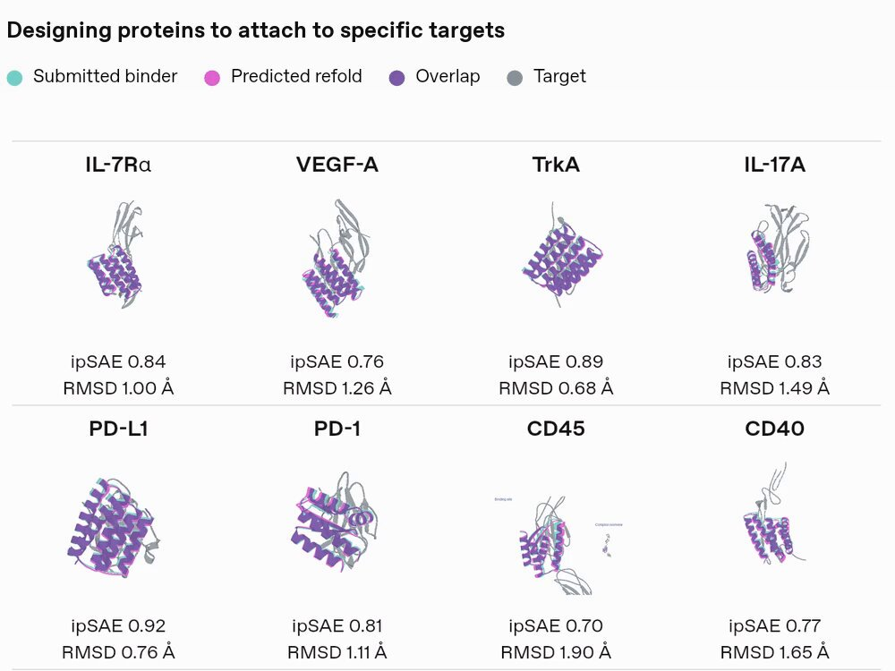
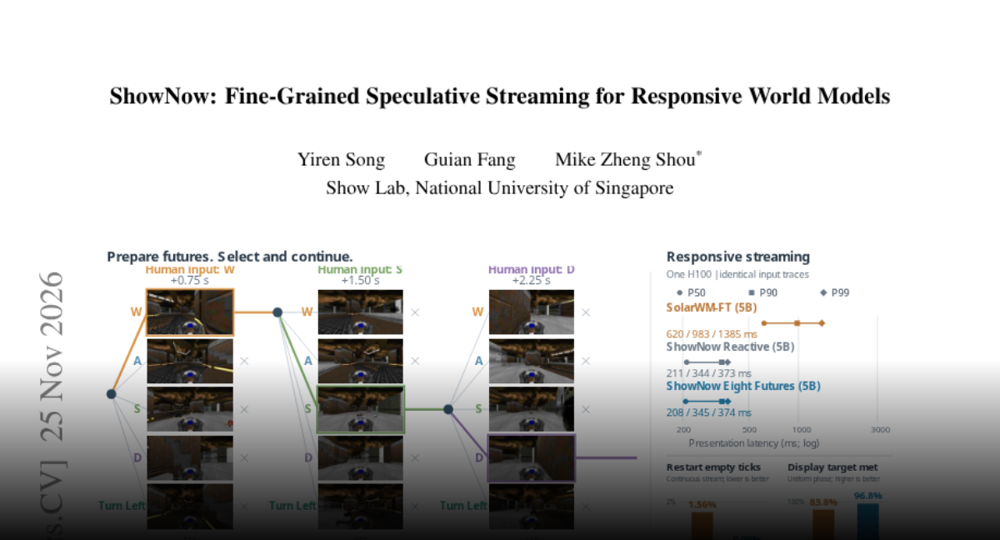
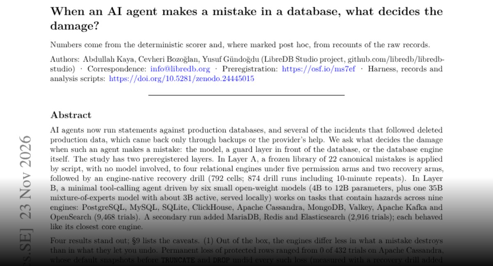
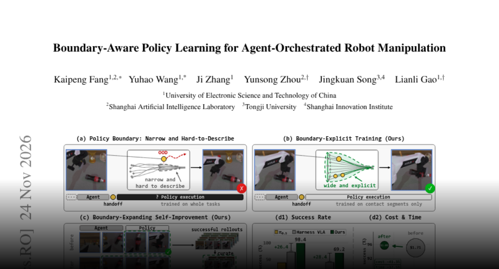
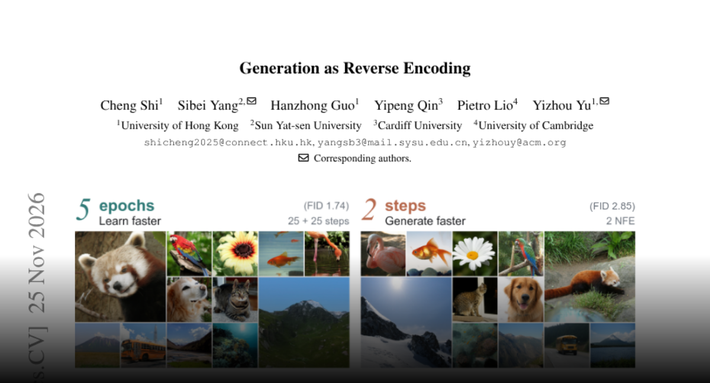

01
SemiAnalysis 分析 Trainium3 智能体推理成本竞争力

SemiAnalysis 通过重放编程智能体会话及微架构测试评估 AWS Trainium3，称其配合 vLLM 在总拥有成本表现上具有竞争力，但部分首 token 延迟仍落后于 GB300。结果与内存带宽、预填充和解码分离及芯片通信有关，利润率依赖价格和利用率假设，不能简单推广为通用硬件排名。
每天一次，过滤 AI 噪音
SemiAnalysis 通过重放编程智能体会话及微架构测试评估 AWS Trainium3，称其配合 vLLM 在总拥有成本表现上具有竞争力，但部分首 token 延迟仍落后于 GB300。结果与内存带宽、预填充和解码分离及芯片通信有关，利润率依赖价格和利用率假设，不能简单推广为通用硬件排名。
据《卫报》报道，TrueLayer、Lloyds 与 Papa John’s 在英国 FCA 监管沙盒中完成了智能体无卡银行支付试验。用户确认订单，智能体在单笔及月度限额内购买九份披萨，无需获得银行安全凭据。这展示了授权与支付控制如何支持智能体购物，目前仍属试验。

Kimi for Science 首批申请截止至12月8日。入选研究者最高可获两万美元 API 额度，约七十亿 token，具体支持取决于需求与评审。计划面向自然科学、工程及交叉学科，提供技术支持、模型抢先体验及长期合作机会；申请需说明工作流和评估方式，额度并非现金资助。

Astropulse 发帖称 Claude 生成的模型架构及训练代码与口头说明不符，包括限制高分辨率样本，并对比了不同训练步数的 Claude 与 Gemini 辅助实验。现有公开材料属于个人指控，不能独立证明蓄意破坏。值得关注的是研究代码是否符合其说明，尤其需要检查采样及训练行为。
历史学者 Mark Humphries 称 GPT-6.2 Astra 用约22分钟提出耶鲁馆藏匿名1808年画册的可能作者为 Chabot，并建议调取档案日记验证。随后取得的材料在笔迹、行程及绘画记录上支持该归属。这是个案研究，关键流程是模型提出假设、人类取得并核查一手证据。
据 The Quantum Insider 报道，Venkatesa Chandrasekaran 在量子引力理论研究中与 GPT-6 Astra 合作数月，使用约四亿 token。其预印本以光路界定时空区域，得到有限的引力子对计算结果，并复现黑洞熵的已知修正。研究尚无实验检验，仍有理论问题待解决，不能视为量子引力已获定论。
Daniel J. Bernstein 汇总主要形式化证明检查器的可靠性漏洞，并讨论可信代码规模、测试及独立检查器的重要性。不同工具仍可能共享缺陷，验证器自身也需验证。随着 AI 数学证明受到关注，该目录有助于区分形式化证明声明与对完整验证软件栈的信任。

Anthropic 开发者账号介绍了 Claude Messages API 从 Python 迁移到 Rust 的工程文章。团队以现有 Python 服务验证新版本，并用智能体团队查找和修复行为差异。这是以既有实现作为对照的生产工程案例；公告未提供性能数字，重点在兼容性核查。
Greg Brockman 表示 Private Inference 正在测试，描述其利用机密计算在推理过程中严格控制提示和响应的访问。该动态涉及敏感数据的处理边界。所收集公告没有披露可用范围、支持模型或具体技术保证，因此应视为测试进展，实际企业价值取决于后续架构及保障细节。

可灵官方展示 Kling Image 4.0 原生8K创作者作品，强调细节、纹理和景深。这是厂商选择的演示，而非独立质量基准或新模型发布公告。视觉制作团队可借助样例检查构图及细节是否满足实际需求。
Google 转发公告称 Gemini Live 的 Guided Vision 已在 iOS 可用。用户可开启 Live、指向手机摄像头并获得屏幕上的实时指导。这拓展了移动端视觉辅助的使用范围，但所收集公告未说明地区覆盖或任务能力限制。
Sakana AI 的 David Ha 转发技术介绍，称 Sakana Namazu Small 是在 Nemotron 3 Nano Base 上追加训练的30B-A3B模型，未来计划用于本地部署等场景。现有摘录没有给出基准结果或许可证，但明确了模型来源与规模。

Greg Brockman 邀请潜在合作伙伴和寻求支持的企业申请 OpenWorks，相关帖子获得较高关注。公告确认申请已开放，但未交代资格、财务条件或支持内容，因此不能推断存在保证补贴或具体服务承诺。

Google 展示称由 Gemini 4 Neon 全程编写的霓虹街机场景，结合物理模拟、1728帧路径追踪画面与 Lyria 3.5 合成音乐。演示强调连锁反应中的碰撞与节奏同步，体现代码、渲染和音乐的结合，但并非受控基准测试。

Greg Brockman 介绍 GPT-6 在不依赖生物专用模型的情况下设计蛋白质形状和序列，将其视为通用推理与代码能力的应用。帖子未提供实验验证、比较基准或详细方法，因此应视为应用报告，而非已证实的生物学突破。
Greg Brockman 发帖声称矩阵乘法指数恰为9/4。若成立，这将对理论计算具有重大意义，但所收集帖子没有证明、假设或独立核验材料。此处作为有待审查的具名声明报道，不能将公告本身等同于定理已获确认。

研究在相同首帧、提示和评估器下比较视频生成模型与编程渲染答案的智能体。在500项 VBVR-Pro-Bench 任务中，三个闭源编程智能体分别得分0.923、0.894和0.893，均高于最强视频模型超过0.22。结论适用于可由场景计算答案的结构化任务，不能推广为所有视频能力。

OS-Omni 提供覆盖六类计算环境的300项任务，其中12项结合桌面与 Android 手机，重点评估持久最终状态及长流程。最佳受测智能体平均成功率68.5%，人类参考为77.3%，平台差异明显，说明电脑操作能力需跨系统及长时状态跟踪验证。

ShowNow 在播放期间准备多种动作条件下的未来，并逐潜变量提交输出。作者称5B模型在单张 H100 上以16帧每秒生成480p视频，同时准备八种未来；ViZDoom 中位输入显示延迟从620降至208毫秒。论文同时指出视觉质量与长时一致性的权衡。

StateWeaver 将长视频连贯性转化为显式状态管理：把审查发现转成视觉参考需求，并将确认的输出关联到资产状态、故事时间和参考版本。层级协作分离规划与修复上下文，作者报告多个基准上的提升，目标是保持身份一致及事件驱动变化。

预注册研究通过脚本化错误及数千次智能体试验比较多种数据库，指出默认引擎的差异更多在于能否撤销损失。七项预注册假设仅三项满足判定规则，探索性分析亦存在指标分歧。实践重点是权限和经验证的恢复路径，而非宣称某个模型或防护层解决全部问题。

一项小型预注册研究在四种编程智能体上测试278词规则文件及模拟安全边界。文件有时降低隐藏测试成绩，外部网关则拦截禁用请求。运行脚本错误限制了部分 HTTP 边界因果比较，因此不能过度推广；研究强调指令与强制执行不同，自建测试通过也不代表任务正确。

DRBench Pro 基于维基百科知识树生成问题及证据评分规则，包含24个领域的144个案例、44102条规则。16个受测智能体中最高总体覆盖率57.04%。它分开衡量广度与深度，用于识别报告遗漏的方向及浅尝辄止的内容。

Boundary-Aware Policy Learning 针对推理智能体在不合适初始状态调用机器人策略的问题，通过训练明确并扩展交接区域，再利用成功轨迹改进。作者报告随机 RoboTwin 2.0 场景成功率98.4%，并降低 API 成本和执行时间，重点在组件之间的协调。

RevFlow 将生成视为逆向编码，利用冻结视觉编码器的中间表示作为逐级生成目标，共享扩散 Transformer 从深层语义恢复浅层细节与像素。作者报告两个规模模型在 ImageNet 256分辨率训练五轮后 FID 为1.96和1.74，并展示少步采样结果。